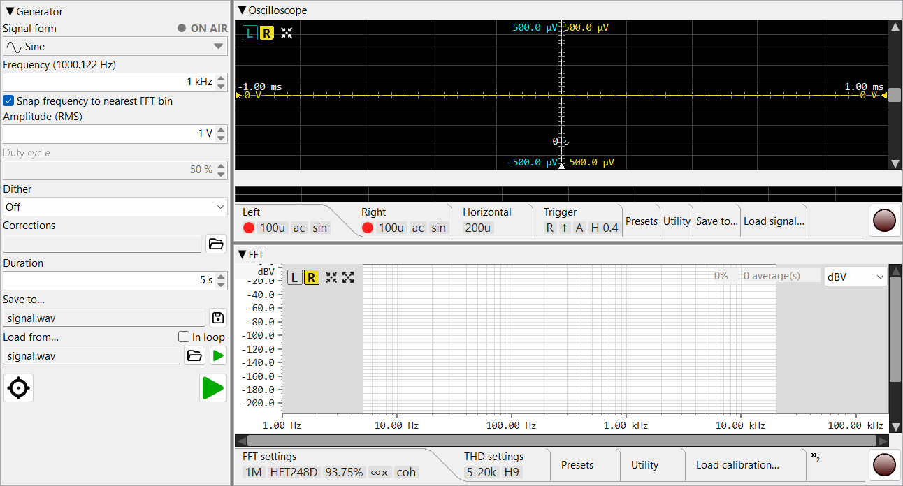

Precision audio measurement workbench: signal generator, oscilloscope, FFT analyser.
Press F1 anywhere in the application to open this help. Press Ctrl+F1 to jump directly to the section covering the control that currently has focus.
🔍 Index & search — search the whole manual, or browse the A–Z list of topics and terms.
💡 Tips — small things that make a big difference, also shown one at a time at startup.
🙏 Credits & acknowledgements — inspiration and thanks.

The main window is split into a Generator pane on the left (its width is adjustable — drag the sash, or set it in Preferences) and a vertical sash between Oscilloscope (top) and FFT analyser (bottom) on the right. Each pane can be collapsed to its title strip by double-clicking the title bar; double-clicking again restores it.
Each module has its own toolbar — a settings-tab strip below the main view with tabs for the per-module settings. The tab strip can be collapsed in turn (double-click the strip) to reclaim vertical space for the visible chart.
V/div,
t/div, FFT length have small up/down
arrows. The mouse wheel scrolls through standard values
(1-2-5-10) and a manual typed value is accepted when it makes
sense for the field.Help → About Phonalyser shows the version and links to the project repository. Use Help → Report a problem to file an issue on GitHub.